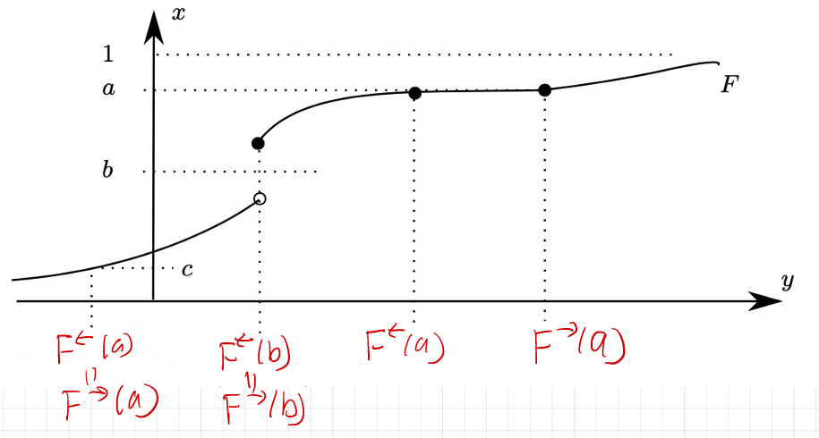

50 Lecture 23.3: Skorohod’s Theorem
50.1 Introduction & Motivation
For random variables defined on a common probability space, almost sure convergence and \(L^p\) convergence (for \(1 \le p < \infty\), assuming the relevant moments are finite) each imply convergence in probability, which in turn implies weak convergence (\(\mu_n \Rightarrow \mu\), or \(X_n \xrightarrow{d} X\)). None of the converse implications holds in general, so weak convergence is the weakest of these modes. Note also that, unlike the other three, weak convergence depends only on the laws of the random variables and does not require them to be defined on a common space.
However, there is a fundamental connection back to almost sure convergence that serves as a powerful analytical tool in many stochastic contexts.
Theorem 50.1 (Skorohod’s Representation Theorem) Let \((S, d)\) be a separable metric space, and let \(\mu_n, \mu \in \text{Prob}(S,\mathcal{B}(S))\). If \(\mu_n \Rightarrow \mu\) weakly as \(n \to \infty\), then there exists a common probability space \((\Omega, \mathcal{F}, P)\) and random variables \(Y_n, Y: (\Omega, \mathcal{F}) \to (S, \mathcal{B}(S))\) such that:
- \(Y_{n*} P = \mu_{Y_n} = \mu_n\) for all \(n \ge 1\),
- \(Y_{*} P = \mu_Y = \mu\),
- \(Y_n \xrightarrow{a.s.} Y\) as \(n \to \infty\).
Recall that \(Y_{n*} P= P \circ Y_n^{-1} = \mu_{Y_n}\) is the pushforward measure of \(P\) under \(Y_n\), which is the same as the distribution of \(Y_n\). Similarly, \(Y_{*} P = \mu_Y\) is the distribution of \(Y\).
On the hypotheses. Separability of \((S,d)\) is enough; completeness is not required, so we do not need \(S\) to be Polish. (It suffices that the limit law \(\mu\) have separable support.) Polishness is often assumed in textbook statements only because it supplies convenient tightness and standard-Borel machinery.
On the scope of these notes. Theorem 50.1 is quoted here as a standard result in this generality. What we prove below is the case \(S = \mathbb{R}\); the general separable case is not proved in this chapter.
Example 50.1 (Skorohod Representation for Converging Normal Distributions) Consider the sequence of probability measures \(\mu_n = N\left(\frac{1}{n},1\right)\) for \(n\geq 1\) and let \(\mu=N(0,1)\). We first observe that \(\mu_n\Rightarrow\mu\). Indeed, the CDF of \(\mu_n\) is \(F_n(x)=\Phi\left(x-\frac{1}{n}\right)\), where \(\Phi\) is the CDF of the standard normal distribution. Since \(x-\frac{1}{n}\longrightarrow x\) and \(\Phi\) is continuous, \(F_n(x) = \Phi\left(x-\frac{1}{n}\right) \longrightarrow \Phi(x) = F(x)\) for every \(x\in\mathbb{R}\). Hence \(\mu_n\Rightarrow\mu\).
Skorohod’s Representation Theorem tells us that there exists a common probability space on which random variables with these distributions can be constructed so that they converge almost surely. We now construct such random variables explicitly.
50.1.0.1 Step 1: Start with a uniform random variable
Let \((\Omega,\mathcal{F},P)=\bigl((0,1),\mathcal{B}((0,1)),\lambda\bigr)\), where \(\lambda\) denotes Lebesgue measure, and define \(U(\omega)=\omega\). Then \(U\sim\operatorname{Uniform}(0,1)\).
We work on the open interval \((0,1)\), not on \([0,1]\). The reason is that \(\Phi^{-1}(0)=-\infty\) and \(\Phi^{-1}(1)=+\infty\), so on \([0,1]\) the variables defined below would fail to be \(\mathbb{R}\)-valued at the two endpoints, and the difference \(Y_n-Y\) would be the undefined expression \(\infty-\infty\) there. On \((0,1)\) every value is finite.
50.1.0.2 Step 2: Transform the uniform random variable
Define \(Y=\Phi^{-1}(U)\) and, for each \(n\geq1\), \(Y_n=\frac{1}{n}+\Phi^{-1}(U)\). The important feature of this construction is that the same random variable \(U\) is used for every \(Y_n\) and for \(Y\).
50.1.0.3 Step 3: Verify the distribution of \(Y\)
We first show that \(Y\sim N(0,1)\). For any \(y\in\mathbb{R}\), \[ \begin{aligned} P(Y\leq y) &= P\left(\Phi^{-1}(U)\leq y\right)\\ &= P\left(U\leq\Phi(y)\right). \end{aligned} \] The second equality follows because \(\Phi\) is a continuous, strictly increasing bijection from \(\mathbb{R}\) onto \((0,1)\); hence \(\Phi^{-1}:(0,1)\to\mathbb{R}\) is well defined and \(\Phi^{-1}(u)\leq y\Longleftrightarrow u\leq\Phi(y)\). (Strict increase alone would not suffice; see the warning in the next section.) Since \(U\sim\operatorname{Uniform}(0,1)\) and \(\Phi(y)\in(0,1)\), \(P\left(U\leq\Phi(y)\right)=\Phi(y)\). Therefore, \(P(Y\leq y)=\Phi(y)\). Thus the CDF of \(Y\) is \(\Phi\), so \(Y\sim N(0,1)=\mu\).
50.1.0.4 Step 4: Verify the distribution of \(Y_n\)
We now show that \(Y_n\sim N\left(\frac1n,1\right)=\mu_n\). For any \(y\in\mathbb{R}\), \[ \begin{aligned} P(Y_n\leq y) &= P\left(\frac1n+\Phi^{-1}(U)\leq y\right)\\ &= P\left(\Phi^{-1}(U)\leq y-\frac1n\right)\\ &= P\left(U\leq \Phi\left(y-\frac1n\right)\right)\\ &= \Phi\left(y-\frac1n\right). \end{aligned} \] But \(F_n(y)=\Phi\left(y-\frac1n\right)\) is the CDF of \(N(1/n,1)\). Hence \(Y_n\sim N\left(\frac1n,1\right)=\mu_n\). Thus the construction preserves all the required marginal distributions: \[ P\circ Y_n^{-1}=\mu_n, \qquad P\circ Y^{-1}=\mu. \]
50.1.0.5 Step 5: Verify almost-sure convergence
The construction makes the convergence particularly simple. We have \[ Y_n-Y =\left(\frac1n+\Phi^{-1}(U)\right)-\Phi^{-1}(U) =\frac1n. \] Both terms are finite at every \(\omega\in\Omega=(0,1)\), so the subtraction is legitimate pointwise. Therefore, for every \(\omega\in\Omega\), \(|Y_n(\omega)-Y(\omega)|=\frac1n\longrightarrow0\). Hence \(Y_n\longrightarrow Y\) everywhere on \(\Omega\), which is in particular the almost sure convergence asserted by Theorem 50.1.
50.2 Inverting the CDF & Generalized Inverses
Suppose \(F: \mathbb{R} \to [0, 1]\) is the CDF of a probability measure \(\mu \in \text{Prob}\left(\mathbb{R}, \mathcal{B}(\mathbb{R})\right)\), i.e., \(F = F_\mu\).
Suppose for a moment that \(F\) is continuous and strictly increasing. Strict increase means \(F(a) < F(b)\) whenever \(a<b\), which (since \(F(b)-F(a) = \mu((a,b])\)) is equivalent to \(\mu\left((a,b)\right) > 0\) for all \(a<b\). Combined with \(\lim_{x\to-\infty}F(x)=0\), \(\lim_{x\to+\infty}F(x)=1\) and the intermediate value theorem, continuity and strict increase make \(F\) a bijection from \(\mathbb{R}\) onto \((0,1)\). We may then set \(Y := F^{-1}: (0, 1) \to \mathbb{R}\). Equipping \((0, 1)\) with the Lebesgue measure \(\lambda\), the distribution function of \(Y\) satisfies: \[ \begin{aligned} F_Y(t) &= \lambda\left(Y^{-1}\left((-\infty, t]\right)\right) = \lambda\left(\left\{ u \in (0,1) : F^{-1}(u) \le t \right\}\right) \\ &= \lambda\left(\left(0, F(t)\right]\right) = F(t), \end{aligned} \] hence \(\mu_Y = \mu\).
To handle general CDFs (which may have flat spots or jump discontinuities), we define generalized lower and upper inverses.
Definition 50.1 (Generalized CDF Inverses) Let \(F: \mathbb{R} \to [0, 1]\) be a CDF. For \(u \in (0, 1)\), define:
- Left-continuous Inverse (Lower Quantile Function): \[ F^\leftarrow(u) := \sup \{ x \in \mathbb{R} : F(x) < u \} \]
- Right-continuous Inverse (Upper Quantile Function): \[ F^\rightarrow(u) := \inf \{ x \in \mathbb{R} : F(x) > u \} \]
Finiteness. Both quantities are finite real numbers for every \(u \in (0,1)\), so that \(F^\leftarrow, F^\rightarrow : (0,1) \to \mathbb{R}\). Indeed, fix \(u \in (0,1)\). Since \(F(x) \to 0\) as \(x \to -\infty\), there is \(m\) with \(F(m) < u\), so \(\{F < u\} \ne \emptyset\). Since \(F(x) \to 1\) as \(x \to +\infty\), there is \(M\) with \(F(M) > u\); then \(F(x) < u\) forces \(x \le M\) by monotonicity, so \(\{F<u\}\) is bounded above. Hence \(F^\leftarrow(u) = \sup\{F<u\}\) is finite, and a symmetric argument applies to \(F^\rightarrow(u) = \inf\{F>u\}\). This is what makes the expression \(F\left(F^\leftarrow(u)\right)\) meaningful and makes the quantile transform an \(\mathbb{R}\)-valued random variable.
Example 50.2 Suppose \(P(X=0)=0.3\), \(P(X=1)=0.4\), and \(P(X=2)=0.3\). Then the CDF is \[ F(y)= \begin{cases} 0, & y<0,\\ 0.3, & 0\leq y<1,\\ 0.7, & 1\leq y<2,\\ 1, & y\geq2. \end{cases} \] Now take \(u=0.5\). We want \(F^\leftarrow(0.5) = \sup\{y:F(y)<0.5\}\). Since \(F(y)<0.5\) whenever \(y<1\), \(\{y:F(y)<0.5\}=(-\infty,1)\). Therefore, \(F^\leftarrow(0.5) = 1\).
Now consider the upper quantile: \(F^\rightarrow(0.5) = \inf\{y:F(y)>0.5\}\). We need to find all \(y\) for which \(F(y)>0.5\). From the CDF, \(F(y)=0.7>0.5\) for \(y\ge1\). Therefore, \(\{y:F(y)>0.5\}=[1,\infty)\) and hence \(F^\rightarrow(0.5)=1\).
Consider \(u=0.7\). Now we see the difference. For the lower quantile, \(F^\leftarrow(0.7) = \sup\{y:F(y)<0.7\}\). Since \(F(y)<0.7\) for \(y<1\), \(F^\leftarrow(0.7)=1\). But for the upper quantile, \(F^\rightarrow(0.7) = \inf\{y:F(y)>0.7\}\). At \(y=1\), we have \(F(1)=0.7\), which is not strictly greater than \(0.7\). We therefore have to move to the next jump: \(F(y)>0.7 \Longleftrightarrow y\ge2\). Thus, \(F^\rightarrow(0.7)=2\). So here \[ F^\leftarrow(0.7)=1, \qquad F^\rightarrow(0.7)=2. \]
- The lower quantile asks: what is the supremum (right endpoint) of the set on which the CDF is strictly below \(0.7\)? Answer: 1. Observe that this supremum is not attained: \(\{y:F(y)<0.7\}=(-\infty,1)\) has no largest element. This is exactly why the definition takes a supremum rather than a maximum.
- The upper quantile asks: what is the infimum (left endpoint) of the set on which the CDF is strictly greater than \(0.7\)? Answer: 2. Here the infimum is attained, since \(\{y:F(y)>0.7\}=[2,\infty)\).
50.3 Technical Properties of \(F^\leftarrow\) and \(F^\rightarrow\)
Ordering: \[ F^\leftarrow(u) \le F^\rightarrow(u), \quad \forall u \in (0, 1). \]
Equivalence & Flat Spots: Say that \(u\) is the height of a flat spot of \(F\) if \(F \equiv u\) on some nonempty open interval. Then \(F^\leftarrow(u) < F^\rightarrow(u)\Longleftrightarrow u\) is the height of a flat spot of \(F\). Consequently, define \[ E := \{u\in(0,1):F^\leftarrow(u)<F^\rightarrow(u)\}. \] For each \(u\in E\), the interval \(\bigl(F^\leftarrow(u),F^\rightarrow(u)\bigr)\) is a nonempty open interval on which \(F\) is constant and equal to \(u\). These intervals are pairwise disjoint. Hence, since every nonempty open interval in \(\mathbb R\) contains a rational number, \(E\) is at most countable. Therefore, \(\lambda(E)=0\).
Key Inequality: For all \(u \in (0, 1)\), \[ \lim_{y \uparrow F^\leftarrow(u)} F(y) \le u \le F\left(F^\leftarrow(u)\right) \] together with the two implications
- If \(y > F^\leftarrow(u)\), then \(F(y) \ge u\);
- If \(y < F^\leftarrow(u)\), then \(F(y) < u\).
The two implications and the left-hand inequality use only the definition of the supremum and the monotonicity of \(F\). Right-continuity of \(F\) is needed only for the right-hand inequality \(u \le F\left(F^\leftarrow(u)\right)\).

Proof (Proof of Technical Properties of \(F^\leftarrow\) and \(F^\rightarrow\)). Proof of 1: Fix \(u\in(0,1)\) and define \(A_u:=\{x\in\mathbb{R}:F(x)<u\}\) and \(B_u:=\{x\in\mathbb{R}:F(x)>u\}\). Take any \(a\in A_u\) and \(b\in B_u\). Then \(F(a)<u<F(b)\). Since \(F\) is nondecreasing, we must have \(a<b\). Otherwise, if \(b\leq a\), then \(F(b)\leq F(a)\), which contradicts \(F(a)<u<F(b)\). Thus every element of \(A_u\) is less than every element of \(B_u\). Therefore, \(\sup A_u\leq\inf B_u\). By the definitions of the lower and upper quantile functions, \[ F^\leftarrow(u)=\sup A_u\leq\inf B_u=F^\rightarrow(u). \] Hence \(F^\leftarrow(u)\leq F^\rightarrow(u)\).
Proof of 2: Fix \(u\in(0,1)\) and write \(a:=F^\leftarrow(u)\) and \(b:=F^\rightarrow(u)\). Suppose first that \(a<b\). Take any \(x\in(a,b)\). Since \(x>a\) and \(a=\sup\{y:F(y)<u\}\), we cannot have \(F(x)<u\). Otherwise, \(x\) itself would belong to \(\{y:F(y)<u\}\), implying \(x\leq a\), which contradicts \(x>a\). Similarly, since \(x<b\) and \(b=\inf\{y:F(y)>u\}\), we cannot have \(F(x)>u\). Otherwise, \(x\) would belong to \(\{y:F(y)>u\}\), implying \(b\leq x\), which contradicts \(x<b\). Therefore, \(F(x)=u\) for \(x\in(a,b)\). Thus \(F\) is constant and equal to \(u\) on the nonempty open interval \((a,b)\); that is, \(u\) is the height of a flat spot of \(F\).
Conversely, suppose that \(F\) has a flat spot at height \(u\). That is, there exist \(a<b\) such that \(F(x)=u\) for \(x\in(a,b)\). We claim that \(\{y:F(y)<u\}\subseteq(-\infty,a]\). Indeed, no \(x\in(a,b)\) belongs to this set, since \(F(x)=u\); and if \(z\geq b\), then monotonicity gives \(F(z)\geq F(x)=u\) for any \(x\in(a,b)\), so \(z\) does not belong to it either. Taking suprema yields \(F^\leftarrow(u)\leq a\). Symmetrically, \(\{y:F(y)>u\}\subseteq[b,\infty)\), so \(F^\rightarrow(u)\geq b\). Hence \[ F^\leftarrow(u)\leq a<b\leq F^\rightarrow(u). \] Therefore, \(F^\leftarrow(u)<F^\rightarrow(u)\). This proves \(F^\leftarrow(u)<F^\rightarrow(u)\Longleftrightarrow u\) is the height of a flat spot of F.
Now consider \[ E=\{u\in(0,1):F^\leftarrow(u)<F^\rightarrow(u)\}. \] For each \(u\in E\), define \[ I_u:=\bigl(F^\leftarrow(u),F^\rightarrow(u)\bigr). \]
Each \(I_u\) is a nonempty open interval on which \(F(x)=u\). Moreover, these intervals are pairwise disjoint. Indeed, suppose that \(u,v\in E\) with \(u<v\). If \(I_u\) and \(I_v\) had a common point \(x\), then the flat-spot property would give \(F(x)=u\) and \(F(x)=v\), which is impossible because \(u\neq v\). Thus \(\{I_u:u\in E\}\) is a collection of pairwise disjoint nonempty open intervals in \(\mathbb R\).
Every nonempty open interval in \(\mathbb R\) contains a rational number. Since the intervals are pairwise disjoint, we can associate a distinct rational number with each \(u\in E\). Because \(\mathbb Q\) is countable, \(E\) must be at most countable. Consequently, \(\lambda(E)=0\).
Proof of 3: Fix \(u\in(0,1)\), set \(A_u:=\{y\in\mathbb{R}:F(y)<u\}\), and let \(q:=F^\leftarrow(u)=\sup A_u\), which is finite by the finiteness remark following Definition 50.1.
Second implication. Let \(y<q\). By definition of the supremum there exists \(z\in A_u\) with \(y<z\leq q\). Monotonicity of \(F\) then gives \[ F(y)\leq F(z)<u. \] Hence \(F(y)<u\) whenever \(y<q\). Letting \(y\uparrow q\) in this inequality gives \[ \lim_{y\uparrow q}F(y)\leq u, \] which is the left-hand inequality of the display. (The limit exists because \(F\) is nondecreasing and bounded.) Note that only monotonicity and the definition of the supremum were used.
First implication. Let \(y>q\). Since every element of \(A_u\) is at most \(q\), we have \(y\notin A_u\), which by the definition of \(A_u\) means exactly \(F(y)\geq u\).
Right-hand inequality. Apply the first implication along any sequence \(y_k\downarrow q\) with \(y_k>q\), obtaining \(F(y_k)\geq u\) for every \(k\). Since \(F\) is right-continuous, \[ F(q)=\lim_{k\to\infty}F(y_k)\geq u. \] Combining the two inequalities gives \[ \lim_{y\uparrow F^\leftarrow(u)}F(y)\leq u\leq F\left(F^\leftarrow(u)\right), \] as claimed. \(\blacksquare\)
50.4 Construction of the Random Variable
Lemma 50.1 (Quantile Transformation) Let \(\mu \in \text{Prob}\left(\mathbb{R}, \mathcal{B}(\mathbb{R})\right)\) with CDF \(F_\mu = F\). Define \(Y: (0, 1) \to \mathbb{R}\) by: \[ Y(u) := F^\leftarrow(u) = \sup \{ y \in \mathbb{R} : F(y) < u \}. \] Equip \(\left((0, 1), \mathcal{B}((0, 1))\right)\) with the Lebesgue measure \(\lambda\). Then \(Y\) is a Borel-measurable random variable, and: \[ Y_* \lambda = \lambda \circ Y^{-1} = \mu_Y = \mu. \]
Proof (Proof of Lemma 50.1). First note that \(Y\) is real-valued at every \(u \in (0,1)\), by the finiteness remark following Definition 50.1. For any \(t \in \mathbb{R}\), we claim the fundamental equivalence: \[ \{ u \in (0, 1) : Y(u) \le t \} = (0, 1) \cap (0, F(t)]. \]
- \((\subseteq)\): Suppose \(Y(u) \le t\). By the right-hand inequality of Property 3, applied at level \(u\), we have \(u \le F\left(F^\leftarrow(u)\right)\). Since \(F^\leftarrow(u) = Y(u) \le t\), monotonicity gives \(F\left(F^\leftarrow(u)\right) \le F(t)\). Combining, \(u \le F(t)\), so \(u \in (0,1) \cap (0, F(t)]\).
- \((\supseteq)\): If \(u \le F(t)\), then every \(y\) with \(F(y) < u\) satisfies \(y \le t\): if \(y > t\), then non-decreasingness of \(F\) gives \(F(y) \ge F(t) \ge u\), contradicting \(F(y) < u\). Thus \(t\) is an upper bound for \(\{y : F(y) < u\}\), so \(Y(u) = \sup\{y : F(y) < u\} \le t\).
Measurability. The displayed identity shows that \(\{Y \le t\} \in \mathcal{B}((0,1))\) for every \(t \in \mathbb{R}\). Since the sets \(\{(-\infty, t] : t \in \mathbb{R}\}\) generate \(\mathcal{B}(\mathbb{R})\), it follows that \(Y\) is Borel measurable.
Distribution. Taking the Lebesgue measure of the above set gives, for every \(t \in \mathbb{R}\), \[ \lambda\left(\{ u \in (0, 1) : Y(u) \le t \}\right) = \lambda\left((0,1) \cap (0, F(t)]\right) = F(t) = F_\mu(t). \] The middle equality also covers the degenerate cases: if \(F(t) = 0\) the set is empty, and if \(F(t) = 1\) it equals \((0,1)\). Since two probability measures on \(\mathbb{R}\) with the same CDF coincide, \(\mu_Y = \mu\). \(\blacksquare\)
Corollary 50.1 (Inverse Transform Sampling) Let \(\mu \in \text{Prob}\left(\mathbb{R}, \mathcal{B}(\mathbb{R})\right)\) have CDF \(F\), and let \(U \sim \text{Unif}(0, 1)\) be defined on some probability space \((\Omega, \mathcal{F}, P)\). Since \(P(U \in (0,1)) = 1\), the composition \(F^\leftarrow(U)\) is defined almost surely, and \[ F^\leftarrow(U) \sim \mu. \]
This is immediate from Lemma 50.1: the law of \(U\) is \(\lambda\) on \((0,1)\), and pushing forward once more along the Borel map \(F^\leftarrow\) gives \(\left(F^\leftarrow\right)_* \lambda = \mu\).
Proof (Proof of Corollary 50.1). Set \(Y=F^\leftarrow(U)\). For any \(x\in\mathbb{R}\), the generalized inverse satisfies \[ F^\leftarrow(u)\leq x \quad\Longleftrightarrow\quad u\leq F(x), \qquad u\in(0,1). \] Therefore, \[ \begin{aligned} P(Y\leq x) &=P\left(F^\leftarrow(U)\leq x\right)\\ &=P\left(U\leq F(x)\right). \end{aligned} \] Since \(U\sim\operatorname{Unif}(0,1)\) and \(F(x)\in[0,1]\), \(P\left(U\leq F(x)\right)=F(x)\). Hence, \(P(Y\leq x)=F(x)=F_\mu(x)\) for all \(x\in\mathbb{R}\). Thus \(Y\) and \(\mu\) have the same CDF. Therefore, \(F_Y=F_\mu\), and consequently \(Y\sim\mu\). That is, \(F^\leftarrow(U)\sim\mu\).
Example 50.3 Suppose we want to generate a random variable \(X\) with \(P(X=1)=0.2\), \(P(X=2)=0.5\), \(P(X=4)=0.3\). Its CDF is \[ F(x)= \begin{cases} 0, & x<1,\\ 0.2, & 1\le x<2,\\ 0.7, & 2\le x<4,\\ 1, & x\ge4. \end{cases} \] The generalized inverse is \(F^\leftarrow(u)=\sup\{x:F(x)<u\}\). We can determine it interval by interval: \[ F^\leftarrow(u)= \begin{cases} 1, & 0<u\le0.2,\\ 2, & 0.2<u\le0.7,\\ 4, & 0.7<u<1. \end{cases} \] Now let \(U\sim\operatorname{Unif}(0,1)\) and define \(Y=F^\leftarrow(U)\). Then: \[ \begin{aligned} &P(Y=1) = P(0<U\le0.2) =0.2, \\ &P(Y=2) = P(0.2<U\le0.7) =0.5, \\ &P(Y=4) = P(0.7<U<1) =0.3. \end{aligned} \] Therefore, \(Y\sim\mu\), exactly as the corollary states.
50.5 Proof of Skorohod’s Theorem (\(S = \mathbb{R}\))
Proof (Proof of Theorem 50.1 for \(S = \mathbb{R}\)). Let \(\mu_n, \mu \in \text{Prob}\left(\mathbb{R}, \mathcal{B}(\mathbb{R})\right)\) with \(\mu_n \Rightarrow \mu\). Let \(F_n = F_{\mu_n}\) and \(F = F_\mu\) be their corresponding CDFs.
Define our probability space as \(\Omega = (0, 1)\), \(\mathcal{F} = \mathcal{B}((0, 1))\), and \(P = \lambda\) (Lebesgue measure). Define the sequence of random variables: \[ Y_n(u) := F_n^\leftarrow(u), \quad Y(u) := F^\leftarrow(u), \quad \forall u \in (0, 1). \] These are real-valued and Borel measurable by Lemma 50.1, which also gives \[ \mathcal{L}(Y_n) = \mu_n \quad \forall n \ge 1, \qquad \mathcal{L}(Y) = \mu, \] establishing conclusions 1 and 2 of Theorem 50.1. To obtain conclusion 3, it suffices to show that \(Y_n(u) \to Y(u)\) for every \(u \in (0,1) \setminus E\), where \[ E = \{ t \in (0, 1) : F^\leftarrow(t) < F^\rightarrow(t) \} \] is defined in terms of the limit CDF \(F\) only. By Property 2, \(E\) is at most countable, hence \(\lambda(E) = 0\), so this yields \(Y_n \xrightarrow{a.s.} Y\).
Throughout we use two standard facts. First, since \(\mu_n \Rightarrow \mu\) on \(\mathbb{R}\), we have \(F_n(y) \to F(y)\) at every \(y \in \text{Cont}(F)\). Second, \(\text{Cont}(F)\) is dense in \(\mathbb{R}\), because the monotone bounded function \(F\) has at most countably many discontinuities.
Step 1: Lower Bound, \(\liminf_{n\to\infty} Y_n(u) \ge Y(u)\).
Fix \(u \in (0,1)\) (this step does not require \(u \notin E\)). Choose \(y \in \text{Cont}(F)\) with \(y < Y(u) = F^\leftarrow(u)\); such \(y\) exist by density of \(\text{Cont}(F)\) and finiteness of \(Y(u)\). By the second implication in Property 3, since \(y < F^\leftarrow(u)\), we have \(F(y) < u\).
Since \(y\) is a continuity point of \(F\), we have \(F_n(y) \to F(y)\). Because \(F(y) < u\), for all sufficiently large \(n\) we have \(F_n(y) < u\). Therefore, by definition of \(Y_n(u) = F_n^\leftarrow(u)\), the point \(y\) lies in the set whose supremum defines \(Y_n(u)\): \[ Y_n(u) = \sup \{ y' : F_n(y') < u \} \ge y. \] Taking the limit inferior as \(n \to \infty\) gives: \[ \liminf_{n \to \infty} Y_n(u) \ge y. \] Since this holds for every \(y \in \text{Cont}(F)\) with \(y < Y(u)\), and such \(y\) can be taken with \(y \uparrow Y(u)\) by density, we obtain: \[ \liminf_{n \to \infty} Y_n(u) \ge Y(u). \]
Step 2: Upper Bound, \(\limsup_{n\to\infty} Y_n(u) \le Y(u)\).
Now fix \(u \in (0,1) \setminus E\) and choose \(y \in \text{Cont}(F)\) with \(y > Y(u)\). Since \(u \notin E\), we have \(Y(u) = F^\leftarrow(u) = F^\rightarrow(u) = \inf \{ y' : F(y') > u \}\). This is the only place where \(u \notin E\) is used. Thus \(y > F^\rightarrow(u)\). Since the set \(\{y': F(y') > u\}\) is closed upward (non-decreasingness of \(F\): if \(F(z)>u\) and \(z'\ge z\) then \(F(z')\ge F(z)>u\)) and \(F^\rightarrow(u)\) is its infimum, any \(y > F^\rightarrow(u)\) belongs to the set, i.e.~\(F(y) > u\).
Since \(y \in \text{Cont}(F)\), \(F_n(y) \to F(y) > u\), so for all sufficiently large \(n\), \(F_n(y) > u\). Because \(F_n\) is non-decreasing, \(F_n(y) > u\) makes \(y\) an upper bound for \(\{z : F_n(z) < u\}\) (any \(z > y\) satisfies \(F_n(z) \ge F_n(y) > u\)), so \(Y_n(u) = \sup\{z : F_n(z) < u\} \le y\). Taking the limit superior as \(n \to \infty\) gives: \[ \limsup_{n \to \infty} Y_n(u) \le y. \] Taking \(y \downarrow Y(u)\) over continuity points \(y \in \text{Cont}(F)\) yields: \[ \limsup_{n \to \infty} Y_n(u) \le Y(u). \]
Conclusion. Combining both steps: \[ \lim_{n \to \infty} Y_n(u) = Y(u), \quad \forall u \in (0, 1) \setminus E. \] Since \(\lambda(E) = 0\), we conclude \(Y_n \xrightarrow{a.s.} Y\). \(\blacksquare\)
50.6 Application: The Continuous Mapping Theorem
Skorohod’s representation theorem allows us to easily transfer continuous functional properties to weak limit theorems.
Corollary 50.2 (Continuous Mapping Theorem) Let \(f: \mathbb{R} \to \mathbb{R}\) be a Borel-measurable function, and let \(X_n\) (\(n \ge 1\)) and \(X\) be real-valued random variables, not necessarily defined on a common probability space. Write \(\text{Disc}(f)\) for the set of discontinuity points of \(f\), and \(\mu_X\) for the law of \(X\). Suppose \[ X_n \xrightarrow{d} X \quad (\text{i.e., } \mu_{X_n} \Rightarrow \mu_X), \qquad \mu_X\left(\text{Disc}(f)\right) = 0. \]
- Weak Convergence: \(f(X_n) \xrightarrow{d} f(X)\).
- Expectation Limit: If \(f\) is additionally bounded, then \(\mathbb{E}[f(X_n)] \to \mathbb{E}[f(X)]\).
Two remarks on the hypotheses:
- First, the condition \(\mu_X\left(\text{Disc}(f)\right) = 0\) is meaningful because \(\text{Disc}(f)\) is always a Borel set: it is the \(F_\sigma\) set \(\bigcup_{k \ge 1}\left\{x : \operatorname{osc} f(x) \ge 1/k\right\}\), and each oscillation set is closed.
- Second, the hypothesis is intrinsic to the law of \(X\), which is why the \(X_n\) and \(X\) need not share a probability space. Borel measurability of \(f\) ensures that \(f(X_n)\) and \(f(X)\) are themselves random variables, so that all expectations below are defined.
Proof (Proof of Corollary 50.2). Step 0: Skorohod Coupling:
Since \(X_n \xrightarrow{d} X\), Skorohod’s Representation Theorem provides a common probability space \(((0, 1), \mathcal{B}(0,1), \lambda)\) and random variables \((Y_n, Y)\) satisfying: \[ Y_n \overset{d}{=} X_n \quad \forall n, \qquad Y \overset{d}{=} X, \qquad \text{and} \qquad Y_n \xrightarrow{a.s.} Y. \] That is, there exists a set \(\Omega_1 \subset (0,1)\) with \(\lambda(\Omega_1) = 1\) such that \(Y_n(\omega) \to Y(\omega)\) for all \(\omega \in \Omega_1\).
Step 1: The Composition \(g \circ f\) is Continuous \(\lambda\)-a.s. at \(Y\):
Let \(g \in C_b(\mathbb{R})\) be any bounded continuous test function. Since \(g\) is everywhere continuous, any point of continuity of \(f\) is also a point of continuity of \(g \circ f\): \[ x \in \text{Cont}(f) \implies g \circ f \text{ is continuous at } x \implies x \notin \text{Disc}(g \circ f). \] Taking complements: \(\text{Disc}(g \circ f) \subseteq \text{Disc}(f)\). Therefore: \[ \lambda\left(Y^{-1}\left(\text{Disc}(g \circ f)\right)\right) = \mu_X\left(\text{Disc}(g \circ f)\right) \le \mu_X\left(\text{Disc}(f)\right) = 0, \] where the first equality holds because \(\mathcal{L}(Y) = \mu_X\). So there exists \(\Omega_2 \subset (0,1)\) with \(\lambda(\Omega_2) = 1\) and \(Y(\omega) \notin \text{Disc}(g \circ f)\) for all \(\omega \in \Omega_2\). Note that \(\Omega_2\) depends on the chosen \(g\); this is harmless for Part 1, in which \(g\) stays fixed throughout Steps 1–5.
Step 2: Pointwise A.S. Convergence of \(g \circ f\):
The set \(\Omega^* := \Omega_1 \cap \Omega_2\) satisfies \(\lambda(\Omega^*) = 1\). Fix any \(\omega \in \Omega^*\):
- \(Y_n(\omega) \to Y(\omega)\) (since \(\omega \in \Omega_1\)).
- \(g \circ f\) is continuous at \(Y(\omega)\) (since \(\omega \in \Omega_2\)).
By the definition of continuity, \(y_n \to y\) and \(h\) continuous at \(y\) implies \(h(y_n) \to h(y)\). Applying this with \(y_n = Y_n(\omega)\), \(y = Y(\omega)\), \(h = g \circ f\): \[(g \circ f)(Y_n(\omega)) \longrightarrow (g \circ f)(Y(\omega)).\] Since this holds for all \(\omega \in \Omega^*\): \[ (g \circ f)(Y_n) \xrightarrow{a.s.} (g \circ f)(Y). \]
Step 3: Dominated Convergence:
Since \(g \in C_b(\mathbb{R})\), there exists \(M < \infty\) with \(|g(y)| \le M\) for all \(y\). Thus: \[ |(g \circ f)(Y_n(\omega))| \le M \quad \text{for all } n \text{ and all } \omega \in (0,1). \] The constant function \(M\) is integrable on \(((0,1), \lambda)\). By the Dominated Convergence Theorem: \[ \mathbb{E}_\lambda[(g \circ f)(Y_n)] \longrightarrow \mathbb{E}_\lambda[(g \circ f)(Y)].\]
Step 4: Transfer Back to \((X_n, X)\):
Since \(Y_n \overset{d}{=} X_n\), for any bounded Borel-measurable function \(h\): \[ \mathbb{E}_\lambda[h(Y_n)] = \int_{\mathbb{R}} h \, d\mu_{Y_n} = \int_{\mathbb{R}} h \, d\mu_{X_n} = \mathbb{E}[h(X_n)], \] and similarly \(\mathbb{E}_\lambda[h(Y)] = \mathbb{E}[h(X)]\). Here \(\mathbb{E}_\lambda\) denotes expectation on the coupling space \(\left((0,1), \mathcal{B}((0,1)), \lambda\right)\), whereas \(\mathbb{E}\) denotes expectation on whichever space carries \(X_n\) (respectively \(X\)); the two are linked only through equality of laws. Applying this with \(h = g \circ f\), which is bounded and Borel: \[ \mathbb{E}[g(f(X_n))] = \mathbb{E}_\lambda[(g \circ f)(Y_n)] \longrightarrow \mathbb{E}_\lambda[(g \circ f)(Y)] = \mathbb{E}[g(f(X))]. \]
Step 5: Conclusion of Part 1:
Since \(g \in C_b(\mathbb{R})\) was arbitrary and \(\mathbb{E}[g(f(X_n))] \to \mathbb{E}[g(f(X))]\) for every such \(g\), the definition of weak convergence gives \(f(X_n) \xrightarrow{d} f(X)\).
Step 6: Part 2 — Bounded \(f\) Implies \(\mathbb{E}[f(X_n)] \to \mathbb{E}[f(X)]\):
Suppose \(|f| \le M\) for some \(M < \infty\). We must not reuse the set \(\Omega^*\) of Step 2: that set was built to make \(g \circ f\) continuous at \(Y(\omega)\), which does not imply that \(f\) itself is continuous there (see the warning below). Instead, define a new full-measure set directly from the hypothesis: \[ \Omega_f := \Omega_1 \cap \left\{ \omega \in (0,1) : Y(\omega) \notin \text{Disc}(f) \right\}. \] Since \(\mathcal{L}(Y) = \mu_X\) and \(\mu_X\left(\text{Disc}(f)\right) = 0\), the second set has \(\lambda\)-measure \(1\); hence \(\lambda(\Omega_f) = 1\).
For every \(\omega \in \Omega_f\) we have \(Y_n(\omega) \to Y(\omega)\) and \(f\) is continuous at \(Y(\omega)\), so \(f(Y_n(\omega)) \to f(Y(\omega))\). Hence: \[ f(Y_n) \xrightarrow{a.s.} f(Y). \] The uniform bound \(|f(Y_n)| \le M\) provides a dominating function, integrable because \(\lambda\) is a probability measure, so by DCT: \[ \mathbb{E}_\lambda[f(Y_n)] \longrightarrow \mathbb{E}_\lambda[f(Y)]. \] Transferring back via Step 4 (with \(h = f\), which is bounded Borel): \[ \mathbb{E}[f(X_n)] = \mathbb{E}_\lambda[f(Y_n)] \longrightarrow \mathbb{E}_\lambda[f(Y)] = \mathbb{E}[f(X)]. \]
Example 50.4 (Absolute deviation around a threshold) Suppose \(X_n\sim N\left(c_n,1\right)\), where \(c_n=1+\frac1n\) so that \(X_n\xrightarrow{d}X\), where \(X\sim N(1,1)\). Consider the function \[ f(x)= \begin{cases} (x-1)^2, & x\leq 1,\\ 2(x-1)^2+1, & x>1. \end{cases} \] This function is discontinuous at \(x=1\) because \[ \lim_{x\uparrow1}f(x)=0, \qquad \lim_{x\downarrow1}f(x)=1. \] Thus \(\operatorname{Disc}(f)=\{1\}\). But the limiting random variable \(X\sim N(1,1)\) has a continuous distribution, so \(P(X=1)=0\). Consequently, \(\mu_X(\operatorname{Disc}(f))=0\). The Continuous Mapping Theorem therefore gives \(f(X_n)\xrightarrow{d}f(X)\).
What does the transformed distribution look like? The transformation is \[ f(X_n) = (X_n-1)^2\mathbf 1\{X_n\leq1\} + \left[2(X_n-1)^2+1\right]\mathbf 1\{X_n>1\}. \] The transformation treats observations differently depending on whether they fall below or above the threshold 1. Nevertheless, \(X_n\xrightarrow d X\) is enough to conclude that the entire transformed random variable converges in distribution: \[ \begin{aligned} &(X_n-1)^2\mathbf 1\{X_n\leq1\} + [2(X_n-1)^2+1]\mathbf 1\{X_n>1\} \\ &\xrightarrow d (X-1)^2\mathbf 1\{X\leq1\} + [2(X-1)^2+1]\mathbf 1\{X>1\}. \end{aligned} \]
50.7 Takeaways
1. The Quantile Construction. For any CDF \(F\) on \(\mathbb{R}\), the left-continuous inverse \(F^\leftarrow(u) = \sup\{y : F(y) < u\}\) is finite for each \(u \in (0,1)\) and defines a Borel map on \(\left((0,1),\lambda\right)\) whose pushforward is \(\mu\). This is the inverse transform sampling principle and is the key building block of the theorem.
2. Skorohod’s Representation Theorem. If \(\mu_n \Rightarrow \mu\) on \(\mathbb{R}\), the explicit Skorohod coupling is \(Y_n = F_n^\leftarrow\) and \(Y = F^\leftarrow\) on the same Lebesgue space \(\left((0,1),\lambda\right)\). The a.s. convergence \(Y_n \to Y\) is proved by a two-sided squeeze: - Lower bound: for \(y < Y(u)\), Property 3 gives \(F(y) < u\); weak convergence then forces \(F_n(y) < u\) eventually, so \(Y_n(u) \ge y\). - Upper bound: for \(y > Y(u)\) (using \(u \notin E\), so \(F^\leftarrow = F^\rightarrow\)), the fact that \(\{z: F(z)>u\}\) is upward-closed gives \(F(y)>u\); weak convergence forces \(F_n(y)>u\) eventually, and non-decreasingness of \(F_n\) then gives \(Y_n(u) \le y\).
Both limiting arguments are legitimate because \(\text{Cont}(F)\) is dense in \(\mathbb{R}\), a monotone bounded \(F\) having at most countably many discontinuities.
3. Why \(u \notin E\) is required. The set \(E = \{u : F^\leftarrow(u) < F^\rightarrow(u)\}\) collects the heights of the flat spots of \(F\). The upper bound argument uses \(F^\leftarrow(u) = F^\rightarrow(u)\), which fails on \(E\); the lower bound argument needs no such restriction. Since flat spots of \(F\) correspond to disjoint open intervals in \(\mathbb{R}\), \(E\) is countable, so \(\lambda(E) = 0\) and the a.s. conclusion holds.
4. The Continuous Mapping Theorem. Skorohod’s theorem reduces CMT to a pointwise statement: since \(Y_n \to Y\) a.s. and \(g \circ f\) is continuous at \(Y(\omega)\) for \(\lambda\)-a.e. \(\omega\) (because \(\mathcal{L}(Y) = \mu_X\), \(\mu_X(\text{Disc}(f)) = 0\), and \(\text{Disc}(g \circ f) \subseteq \text{Disc}(f)\)), we get \((g\circ f)(Y_n) \to (g\circ f)(Y)\) a.s., and DCT finishes the argument. For bounded \(f\) one argues the same way, but on the set \(\Omega_f\) where \(f\) itself is continuous at \(Y(\omega)\): the set built for a fixed test function \(g\) will not do, since \(\text{Disc}(g \circ f)\) can be much smaller than \(\text{Disc}(f)\).
5. Scope and Limitations. The explicit CDF-inversion proof is special to \(\mathbb{R}\). For a general separable metric space \(S\) — completeness is not needed — the coupling is obtained by constructing a suitable joint measure on an auxiliary space (via nested partitions or probability kernels), not a product of the marginals; the conclusion, and all applications including CMT, remain the same. That general statement is quoted here as a standard result and is not proved in this chapter. Importantly, Skorohod’s theorem does not assert that \(X_n \to X\) a.s. on the original probability space; it only provides an equivalent coupling on a new space.